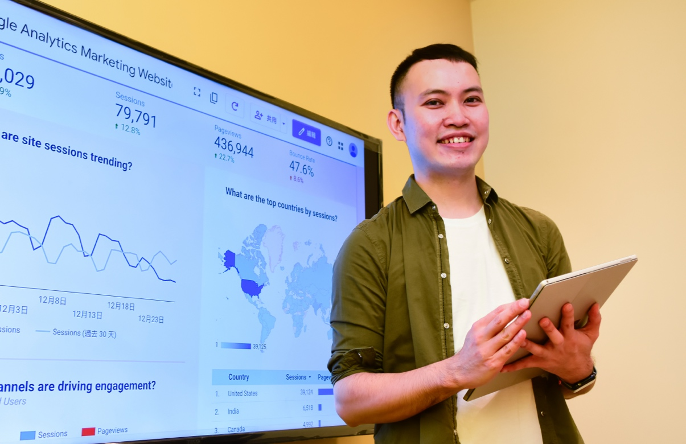

在這裡你可以是數據分析師，你也可以是數據工程師，從需求到資料可視化，讓數據不只可以很親民，還能替公司帶來改變，體驗扎實的媒體數位轉型。一起來看看數據分析師Jeffery的日常。

陳世杰・天下雜誌群 數位創新部主任分析師
數據分析不只是指標，是理性和故事的結合，懂得應用才是真諦
「大家喜歡問我怎麼做決策，我都會說：數字怎麼告訴我，我就怎麼做決策。雖然聽起來有點冷或頑固，但這就是我堅持的世界。」
數據分析師的優勢，是一聽到問題，就知道用哪些數據去解決問題。我們喜歡以使用者足跡去分析用戶喜好，用數字說話，來挑戰前輩的經驗。透過不斷追問「為什麼」，提出新發現，並且解決問題。
在集團中，當行銷和業務在第一線作戰時，他們需要扎實的後援。一旦需要擬定策略時，我們就要透過分析數據給予方向，所以數位創新部就像是提供彈藥的軍火庫。雖然我們和業績沒有直接關係，但我們會藉由計算得出結論，讓其他團隊知道該怎麼做才有業績。這裡有重視數據的企業文化，同事的接受度很高，也願意了解。因為組織扁平，自己就是專案管理人，更讓我確信，數據距離大家其實並不遙遠，它是協助每位同仁完成工作最好的工具。
目前已經與非常多單位進行跨部門合作，例如行銷、PM、內容、甚至是發行人。我很喜歡和不同部門的人討論，從言談之中去發現對方的需求。每當我從數字中研究出一項洞察，我就會很high、很滿足，相信數字，用數字說故事，是我工作中最有成就感的部分。